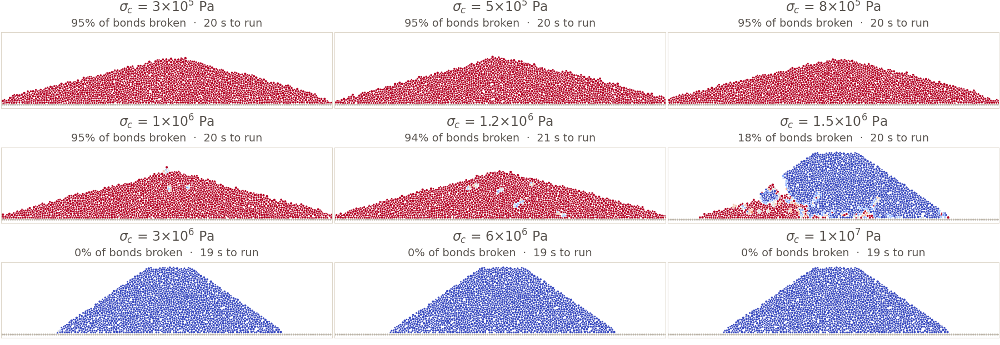

Discrete evaluation and resolution
Video: Sampling turn a continuous signal into discrete samples (0:54:16). Slides
A function known only at finitely many points carries no information about its behaviour between them. An event shorter than the gap between two evaluations can happen entirely inside that gap and leave the result unchanged, and a peak read from spaced evaluations is a lower bound on the true peak. Whether the spacing can be reduced depends on whether the analyst or the instrument chose it.
You only know what you looked at. Sometimes you can look again more closely, and sometimes the recording is all there is.
A Film Records Nothing Between Frames
A film is a strip of still photographs, twenty-four to the second. Whatever happened in front of the lens between one frame and the next is not in the film, and no amount of study of the film will produce it. That is what a film is, and stop-motion animation is the same mechanism used on purpose: the model is moved between exposures, so the only thing never photographed is the movement itself.
A sampled record is a film of one number. The channel whose header you read in week 1 is 12 500 photographs a second of a single acceleration, and between any two of them the record says nothing at all. Nothing at all is a stronger statement than it looks. It does not mean the value in between is uncertain, or roughly the average of its neighbours. It means every curve through the two samples is equally consistent with what was recorded, including curves that leave the range the samples suggest entirely.
This has a specific consequence for peaks, and it runs in one direction only. Every evaluation is a value the quantity actually takes, so the largest of them is a value the quantity actually reached, and the true peak is at least that large and may be larger. A peak read from spaced evaluations is a lower bound. The distinction is worth keeping, because a bound can only be wrong in one direction while an estimate may err either way.
Records and Sweeps
A measured record and a computed sweep are both a finite set of evaluations of something continuous. What separates them is who chose the spacing.
- A record is an instrument evaluating a physical quantity at a fixed interval. The interval is in the header, and it was set before you arrived.
- A sweep is a program evaluating a function at inputs the analyst chose. The spacing is in the code, and the analyst is you.
When the swept dimension is time, the interval usually arrives as a frequency, measured in hertz. One hertz is once per second, so 12 500 Hz is 12 500 samples a second. (Time is the most common dimension to sweep, and the one an instrument almost always samples in, but any input can be swept. The bond strength below is a stress, and week 7 sweeps a design parameter with no units at all.) The spacing and the rate are the same fact written two ways, and each is the reciprocal of the other:
$$\Delta t \;=\; \frac{1}{f_s}, \qquad \frac{1}{12\,500\ \text{Hz}} \;=\; 8.0\times10^{-5}\ \text{s} \;=\; 80\ \mu\text{s}$$Both cases are the same trade. A finer spacing gives a better picture of something continuous, and a finer spacing costs more. Only the currency changes. An instrument pays in hardware: a faster converter, more storage, more data off every test, multiplied by every channel in the vehicle, and the laboratory bought a sample rate once and has recorded every test at it since. A sweep pays in run time, because one point of a sweep is one whole evaluation of whatever the model is, and for anything worth sweeping that is not free.

Nine runs, 19 to 21 seconds each, 177 seconds for the sweep. Those seconds are the whole of what the spacing costs. Nothing else changes between panels, so every difference you can see was bought by moving σc and paying for another run.
Notice what nine points bought and what they did not. Somewhere between 1.2×106 Pa and 1.5×106 Pa this hill stops collapsing, and the sweep locates that change only to within the gap between those two runs. The first four runs of an earlier sweep put it somewhere between 8×105 and 1.5×106, and closing the gap that far cost three more simulations. Closing it again costs more still. Nobody evaluates as finely as they would like, and the spacing that gets used is the one where the cost stopped being worth paying.
Refining a sweep pays off until it reaches something the model itself cannot resolve. At σc = 1.5×106 Pa, four runs of this identical scenario broke 13.5%, 16.2%, 17.5% and 32.5% of the bonds. The simulation is not deterministic at this scale, because the order in which thousands of contacts are summed on a GPU varies between runs, and near the transition a handful of early bond failures decides whether a slope holds or runs.
Away from the transition the runs agree exactly, at 95% broken for the three weakest and 0% for the three strongest. So the scatter is not noise in the measurement of a smooth quantity. It is the physical answer genuinely hanging in the balance at that bond strength, and a finer sweep would report it with more decimal places and no more certainty.
Nothing Is Known Between Two Samples
Between two adjacent evaluations, nothing is known. The figure below draws three functions that agree at every sample and disagree everywhere else: same five samples, same dashed line through them, three different answers to what the largest value was.
The third panel is the one worth sitting with. It is tempting to believe that samples at least bracket the truth, so that a quantity reading 0.4 and 0.3 at two consecutive samples stayed near 0.4 in between. Nothing in the record supports that. Between two samples the curve may go anywhere, in either direction, and return in time to be measured.
Decimating a Real Record
Decimating a record means keeping every k-th sample. The crossmember channel from week 3's crash test is recorded at 12 500 Hz with a peak magnitude of 1540.4 m/s². Keeping every k-th sample and re-reading the peak:
The peak survives to about 1250 Hz and then collapses. However, the single number the demo reports is not the whole story, because decimation has a second choice hidden in it: which of the k samples in each group you keep.
Starting at sample 0 is a convention. y[::k] in Python, y(1:k:end) in MATLAB, and a loop from i = 0 in any language all begin at the first element, because that is where arrays begin. Few analysts weigh the alternatives and pick the first sample deliberately. The starting offset is inherited from the language, and the table below is what it is worth:
| Rate | k | peak, keeping sample 0 | worst starting sample | best |
|---|---|---|---|---|
| 12 500 Hz | 1 | 1540.4 | 1540.4 | 1540.4 |
| 3 125 Hz | 4 | 1540.4 | 1262.2 | 1540.4 |
| 1 250 Hz | 10 | 1540.4 | 793.2 | 1540.4 |
| 500 Hz | 25 | 787.1 | 642.6 | 1540.4 |
| 250 Hz | 50 | 787.1 | 421.0 | 1540.4 |
| 100 Hz | 125 | 617.9 | 303.0 | 1540.4 |
At 250 Hz the peak you report is somewhere between 421 and 1540 m/s², a factor of 3.7, decided entirely by which sample the decimation happened to start on. The best column is 1540.4 in every row because one starting offset always lands on the true peak sample, which is the lower-bound property of the previous section made concrete. Every one of those readings is a value the quantity really took, and every one of them is too small except the lucky one. Nothing in a 250 Hz record announces which of the cases you have, and there is no way to recover it from the record alone.
Decimatio was a Roman army punishment for mutiny or desertion. The unit was divided into groups of ten, each group drew lots, and the nine who drew safe beat the tenth to death. One in ten killed, which is what the word says: decimus, a tenth.
Signal processing borrowed the word and inverted the ratio. Decimating a record by k = 10 keeps one sample in ten and discards nine, so the Roman proportion is exactly reversed. The borrowing is old enough that nobody is going to change it, and the word survives with the arithmetic upside down.
Aliasing, a Fast Signal Read as Slow
Decimating raised a question it did not answer. Thinning a record to a lower rate removes the samples in between, and the sections above treated what is lost as simply absent. For a peak that is right. For an oscillation it is worse than that, because an oscillation too fast for the rate does not go missing. It comes back as a slower one.
Take a 9 Hz oscillation and sample it ten times a second. Every sample is a genuine measurement of the fast signal, taken correctly at the right instant. Plotted, they trace a 1 Hz oscillation:
This is aliasing, and the arithmetic of it is simple. A record taken at a rate fs can represent oscillation up to half that rate. That half-rate is the Nyquist frequency, and here it is 5 Hz. The 9 Hz signal is above it, so the sampling folds it down to the difference between the signal and the rate, which is 10 − 9 = 1 Hz.
$$f_{\text{alias}} \;=\; \left| f - f_s \right|, \qquad \left| 9 - 10 \right| \;=\; 1\ \text{Hz}$$What makes this different from a lost peak is that nothing is missing. The record is full, the samples are correct, and it describes an oscillation that never happened. A gap in the data announces itself. A fast signal folded down to a slow one does not, and a reader of the record has no way to find it, because the fast signal and the slow one are the same eleven numbers.
A reasonable question, given the crash channel is filtered at 2000 Hz and sampled at 12 500 Hz: if Nyquist still governs the record, why does the filter help?
Nyquist is a statement about the record, and the filter does not change it. At 12 500 samples a second the Nyquist frequency is 6250 Hz, before the filter and after it, and anything above 6250 Hz that reaches the converter will still be folded down exactly as the 9 Hz signal was.
What the filter changes is what reaches the converter. It removes the content above about 2000 Hz while the signal is still a continuous voltage, so by the time the sampling happens there is almost nothing left above 6250 Hz for the sampling to fold. The limit is still there. The signal now satisfies it.
That is also why the filter has to be analogue and has to act first. Once the samples exist, the folded-down content is added into the same numbers as the genuine slow content, and no filter applied afterwards can tell the two apart.
Step-Over in a Design Sweep
The same arithmetic runs in a sweep. There the samples are inputs you chose, and no instrument picked them for you.
A piece of rotating equipment is to be mounted on a structure. It can run anywhere from 5 to 40 Hz, which is 300 to 2400 rpm, and the requirement is that the structure never amplify the forcing by more than a factor of 15 anywhere in that range. The structure has a natural frequency of 18.35 Hz and a damping ratio ζ of 0.02, and its amplification at a drive frequency f is the standard single-degree-of-freedom response:
$$H(f) \;=\; \frac{1}{\sqrt{\left(1 - r^{2}\right)^{2} + \left(2\zeta r\right)^{2}}}, \qquad r \;=\; \frac{f}{f_n}$$Sweep the operating range in 2 Hz steps. That is 18 evaluations, at 5, 7, 9 and so on up to 39 Hz. The largest amplification any of them reports is 12.0, at 19 Hz. The requirement is 15, so on this evidence the design passes.
The design does not pass. The true maximum is 25.0, at 18.34 Hz, and the band in which the structure exceeds the limit of 15 runs from 17.85 to 18.83 Hz. That band is 0.98 Hz wide, the step is 2 Hz, and the two grid points that straddle the band, 17 and 19 Hz, both sit outside it. The sweep walked over the failure without touching it.
Drag the step down and watch the largest value the sweep can see. At 2 Hz it reports 12.0 and passes. Halve the step and it reports 18.4 and fails, and halving again gives 23.0, then 24.2, then 24.9. An answer that keeps moving by this much under refinement is an answer whose spacing was too coarse, and the verdict flips once, on the first halving, and never flips back.
A resonance is usually a narrow feature. The width of the peak is set by the damping, and for a lightly damped structure the half-power bandwidth is about 2ζfn, which here is 0.73 Hz. Lower the damping and the peak gets taller and narrower at the same time, so the more dangerous the resonance is, the easier it is for a sweep to miss.
The failure is a quiet one. A sweep that stepped over the answer and a sweep over a problem that genuinely has no solution produce the same output, which is a curve that never crosses the threshold, and nothing distinguishes the two cases without refining. This is the same lower-bound problem as the record above, arriving in a place where it is easier to miss (nobody suspects a plot of a function they wrote themselves).
A Sweep Can Be Refined, a Record Cannot
Here the two cases separate, and they separate on who chose the spacing.
In a sweep the spacing is yours. Refine it and see whether the answer moves. If halving the step changes the result the step was too coarse, and if it does not you have evidence that it was fine enough, though not proof. That is a convergence check, and it is the standard way of defending a resolution when the true answer is unknown. Refining everywhere is wasteful, so the usual pattern is a coarse pass to find the interesting region and then a fine pass within it.
In a measurement the spacing is the instrument's. There is no refinement available, because the samples that were not recorded do not exist and cannot be recovered. Interpolating between samples produces a smoother picture and no new information, so whatever the interpolated curve does between two samples is an assumption you have supplied. What is available is honesty about the bound. A peak reported from a record is reported with the sample rate beside it, because the two together are a statement about how far the true value could exceed it and the number on its own is not.
The channel header on the first page of the course carries two frequencies, and they do different jobs. The sampling interval is 8.0×10−5 s, which is a sample rate of 12 500 Hz. The cut-off frequency is 2000 Hz, and that is not the sample rate. It is an analogue filter applied to the transducer voltage on the way to the converter, before any sampling happens.
Why filter at all. Without it, structural response above 6250 Hz would be folded down into the record as slower content that never happened, by the arithmetic of the section above. That is the one thing about a record that cannot be repaired afterwards.
Why 2000 and not 6250. Two reasons, both arithmetic. First, an analogue filter rolls off gradually over a range of frequencies, so its corner has to sit well below Nyquist for the response to have become negligible by the time Nyquist arrives. A corner at 2000 Hz leaves a factor of three for that roll-off. Second, 2000 Hz is above the highest CFC class in the standard, which is CFC 1000, so nothing the standard will later ask to be computed from this channel lives above the corner.
The cost is real, and the header states it. Structural response above 2000 Hz is absent from this record and cannot be recovered from it. The laboratory traded a known absence for an unknown corruption, which is the whole of what a prefilter buys you, and wrote down the frequency it traded at. Week 4 is about what else that filter did.
- You read a peak of 620 m/s² from a 100 Hz record. What can you say about the true peak,
and
what can you not?
Answer
You can say the true peak is at least 620 m/s². Every sample is a value the quantity genuinely took, so the largest of them is a lower bound and that bound is certain.
You cannot say it is 620, and you cannot put any number on how much larger it might be. At 100 Hz the samples are 10 ms apart, and nothing recorded constrains what happened in between. A spike lasting 3 ms can sit entirely between two samples and leave no trace at all. To bound it above you need something the record does not contain, which is knowledge of how fast the quantity can change. That typically comes from the physics, or from a prefilter whose cut-off is stated in the header (this record has one, at 2000 Hz).
- A sweep at 20 points shows no value meeting the requirement. Give two different
explanations
and say what single further run would distinguish them.
Answer
One: no value in the range meets the requirement. Two: one does, and the grid stepped over it because the feature is narrower than the spacing.
The single run that distinguishes them: sweep the same range again with the grid offset by half a step. If the answer is unchanged, the region between the original points behaves as they suggested. If something appears, the grid was too coarse and the first sweep was not evidence of absence. Offsetting is usually better than refining here, and it is cheaper. Doubling the points keeps every original location and adds new ones between, while the offset sweep lands entirely in the gaps, which is where the missing feature has to be if it is anywhere.
- Halving the step in a sweep changes the answer by 0.2%. Halving it again changes it by
0.05%.
What do you conclude, and what have you not established?
Answer
The changes are falling by a factor of about four for each halving, which is what an order-2 method does, and they are falling fast enough that the sequence is converging. The remaining error is roughly a third of the last change, about 0.017%, so the answer is good to two or three significant figures.
You have not established that the answer is right. Refinement measures the distance to the exact solution of the model you wrote down, and a wrong model converges every bit as smoothly as a correct one. That is, convergence is a statement about the arithmetic, and it says nothing at all about the physics. Nor have you established that no feature narrower than the current step exists. Three points on a smooth trend are consistent with a smooth function, and equally consistent with a smooth function that has one narrow spike you keep missing.
- The resonance sweep above reports 12.0 on a 2 Hz grid and 18.4 on a 1 Hz grid. A colleague says the 1 Hz answer is close enough to stop at. What is wrong with that?
Answer
Nothing in those two numbers says the sequence has settled. The answer moved by more than half of itself between the two grids, which is the signature of a feature the grid has not yet resolved. A converged sequence gives small changes that keep getting smaller. This one is still climbing, and continuing produces 23.0, then 24.2, then 24.9.
There is a second problem, and it is the one that matters on a drawing. 18.4 already exceeds the limit of 15, so the verdict has flipped. Stopping at 1 Hz gets the engineering decision right, which can hide the fact that the number is 26% low. If the limit had been 20 instead of 15 the 1 Hz grid would have reported a pass for a structure that fails.
In Code
def at_lower_rate(y, dt, factor):
return y[::factor], dt * factor
slow, slow_dt = at_lower_rate(y, dt, 10)
function [s, s_dt] = at_lower_rate(y, dt, factor)
s = y(1:factor:end);
s_dt = dt * factor;
end
[slow, slow_dt] = at_lower_rate(y, dt, 10);
function atLowerRate(y, dt, factor) {
const s = [];
for (let i = 0; i < y.length; i = i + factor) {
s.push(y[i]);
}
return [s, dt * factor];
}
Terms Used on This Page
Hover or tab to a highlighted term in the text to see its definition. Every term marked on this page is listed here.
Go deeper: the workbench. drop the sample rate on any record and watch what the peak does.